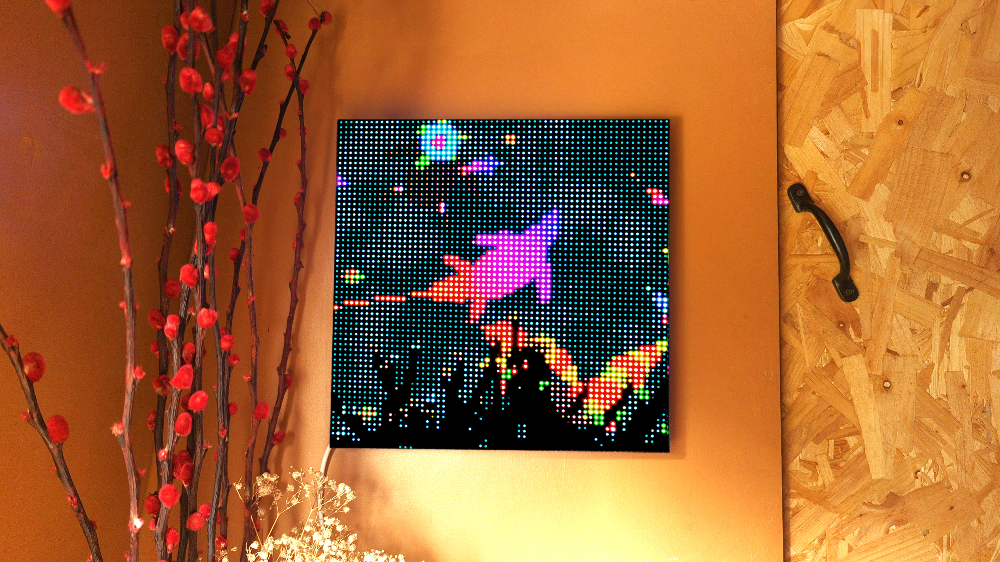
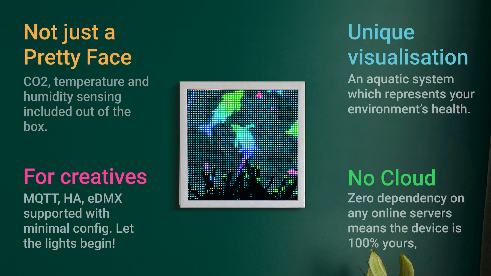

Welcome to Livegrid

Weather you have just plugged in your first Livegrid device, or are looking to understand more about how it all comes together - this is the place to be.
This quickstart guide is the best place to start, but keep reading if you want to know more. You can also refer to the Quickstart PDF for additional information.
For firmware updates and maintenance, please refer to our Update Guide.
Plug-and-Play
Primarily, Livegrid is a plug-and-play device. It uses internal sensors to collect data on temperature, humidity and CO2 levels of the space it's in.
But instead of displaying that data in form of numbers of complicated graphs, it shows it in form of a beautiful aquatic ecosystem.
The best way to understand is to see the demo on the first boot. This can be restarted using touch buttons as shown below. You can find more details in the Aquarium section.

Touch Control
The 2 touch buttons give you a basic control over your Livegrid, which might be enough for you. Here's the list of actions you can perform-
Go Back- Leave the menu.WiFi Info- Check weather the device is connected to WiFi, and the current IP address.Show/Hide Sensor Data- Show or hide the sensor data on the display.Brightness- Change the brightness of the display, or leave it on auto.Start Demo- Start a short demo of the ecosystem, the same one which you saw on the first boot.Turn Off- Turns the display off (the ecosystem keeps running underneath). Use touch buttons to wake up again.Factory Reset- Reset the device to factory settings, useful if you want to give away your Livegrid or have some issues with it.
Web App
If you want more, of course there is an app. But unlike the apps hosted on play store or app store, this one is hosted within the device itself. You access it locally on your network, instead of relying on any cloud services.
That being said, the web-app is intended for advanced users as it can lead to glitches and minor issues. However, it is fairly simple and fun to use and if you are interested, please don't hesitate and try it out. Follow the steps below to get into it-
Connect to WiFi
Connect to Livegrid- When plugged in, Livegrid creates a WiFi network of its own (conveniently called Livegrid). This will expire in a few minutes - so if you don't see it, simply restart your Livegrid.Access the Captive Portal- Connecting to Livegrid will redirect you to the captive portal.Enter your WiFi Credentials- Find your WiFi network name (SSID) and enter your password.Submit and Connect- Click onSubmitand you are in.Check the IP address- Click onBackto see the IP address assigned to your Livegrid.Connect to the Web App- Open a browser and type in that IP address.Enjoy- You can now enjoy your Livegrid.
Create a shortcut on your phone
Open the Web App- Open the web app on your browser.Open the browser menu- Click on the menu button on the top left or top right corner.Click on the Add to Home Screen Button- Click on the+ Add to Home Screenbutton.Save- Click onSaveand you can now find your Livegrid on your home screen.- Follow this link for a more detailed explanation: Installing Progressive Web Apps.